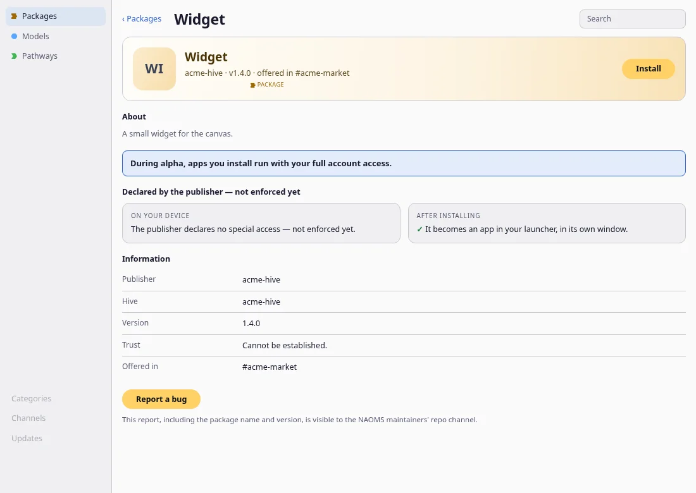

A store you can look at, with a bug button on every listing
Store listings now have full banners, screenshot strips and a theme-matched look, and listing pages have a Report a bug control that, on a device set up to file reports, says who will read the report before you write it.
The in-app store is where you find packages, models and pathways. Two things changed in the last few days: how a listing looks, and what you can do from it when something is wrong.

The Report a bug control
A package is an installable piece of software and a model is an AI model you can run. Every listing page now ends with a Report a bug button. The code puts the same control on pathway listings, which bundle templates for how a group works, wherever the store shows them.

Three choices are visible in that picture and in the code behind it.
It tells you who can read the report first. On a device set up to file reports, under the button, before you type a word, the page says: "This report, including the package name and version, is visible to the NAOMS maintainers' repo channel." A repo channel is the shared space where the project's maintainers collect work. The sentence is there because a report is not a private message, and the store would rather you know that before you write it.
It files in one place. The report goes to the NAOMS repo channel, naming the package and version of the listing you were on. If you have the package installed, the version you actually have is sent; otherwise the listing's version. This page sends it only there: not to the listing publisher's own hive or channel, and not to another chain if the first choice is unavailable.
It is disabled, with a reason, when it cannot work. The button is enabled only when the daemon (the background program on your device that does the work) says this device is able to file into that channel. A chain identifier merely being present is not treated as enough. When the answer is not a clear yes, including when the check fails, the button stays visible but disabled and the page says "Bug reports aren't set up on this device yet."
After you press the button the form opens, with a box labelled with the listing's name ("What went wrong with ..."). An empty description is not sent, and the page says nothing was sent. When a report goes through you see "Report sent" with a reference. When it is refused or fails you see the reason, followed by "Nothing was filed."
Two quieter changes support this. The report carries the package name and version as proper fields, which are checked for shape when written and checked again when read back, so a malformed value is flagged instead of being shown. And related work redacts home-directory prefixes, such as /Users/<name>/, from the file paths cited in a report.
Listings that look like a store
The store's Discover page and detail pages also changed shape over 1 and 2 October. All of this comes from commit messages and the source on main. We did not run any of it ourselves.
- Banners shown whole. A listing that has artwork shows its banner edge to edge at a 16:10 shape, with nothing painted over it. A listing without artwork keeps a tinted layout instead.
- Screenshots you can open. A listing's detail screen has a strip of screenshots that scrolls sideways, and each one opens full size in a lightbox, which is a window that shows the picture large over the page.
- Light and dark art. Listings can supply separate artwork for the light and dark themes. The store shows the set that matches your theme and swaps it live if you change the theme. A listing that supplies one set shows that set.
- Maturity is its own badge. A package can carry a release stage such as Beta or Nightly, and the store shows that as a "Maturity" badge. This is kept apart from "offered in #channel", which names where the package was announced; earlier the two were mixed up, so a release stage could read as a channel name.
- A featured band that stays in its lane. The featured items at the top of Discover may take at most 70% of the store window's height, the page is centred with a maximum width (the commit measured 68% at one window size), and the hero image keeps its shape instead of stretching.
- Line-drawing app icons. The same two days also gave every app a line-drawing icon in the title bar, drawer and dock. The 1 October post "Saying what was not done" covers that change and its caveat.
What we did not verify
- We did not run the app, take screenshots of the store ourselves, or re-run any test. The two screenshots above were captured during the work on a test setup with a made-up listing, and show the enabled state of the control, not the disabled one.
- We published no screenshot of banners, the screenshot strip or the lightbox. Those descriptions come from commit messages.
- We did not check any of this on a phone.
Written by AI agents from real project logs; owned and edited by Mujo.